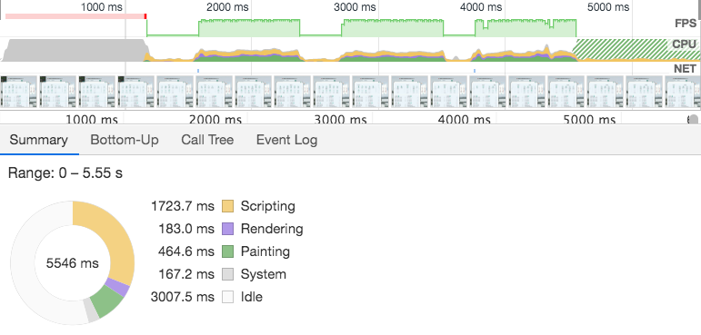
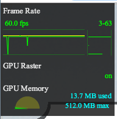
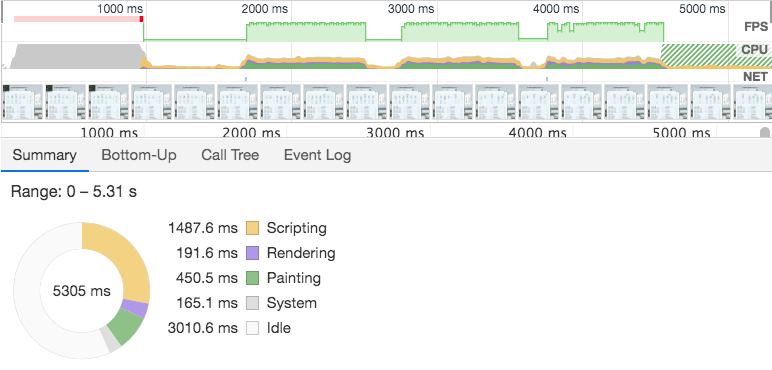
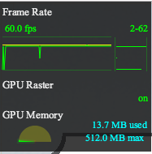
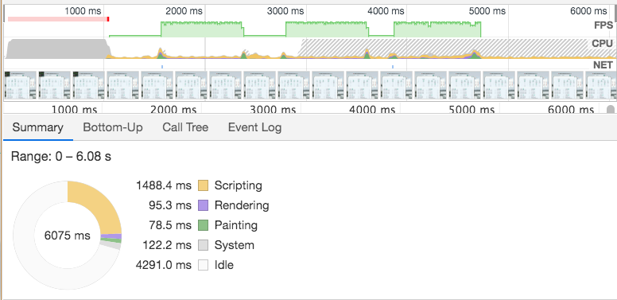
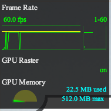
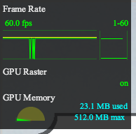

每个项目中或多或少地会使用到动画，使得用户体验效果更好。通常简单的动画对性能影响很小，但是涉及到稍微复杂的动画或者在配置比较低的机器上时，一些不当的处理方式会使性能问题变得十分突出……
前言
已经完结的一个项目，最近需要适配其他的机器，出现了一个严重的问题：以前很流畅的动画突然gg了。因为现在适配的机器配置比较低，所以出现了动画卡顿现象：渐进动画变得很鬼畜，没有渐进效果，直接就是一个开始状态，一段时间后直接变成结束状态，让人感受不到中间时间段的渐进效果。以前写动画效果，只考虑到如何才能让这个动画看起来更贴切用户的体验，并没有考虑到动画性能以及优化动画。
为什么会出现卡顿
1. 浏览器多进程
前提知识：浏览器多线程，js单线程。浏览器执行js是单线程执行，意思是在运行时，只有一个线程，并不代表浏览器只有一个线程。
现代浏览器中通常会有两个重要的执行线程，这两个线程协同工作来渲染一个页面 —— 主线程，合成线程。
- 主线程：运行Javascript，计算HTML元素的CSS样式，页面的布局，将元素绘制到一个或多个位图中，将这些位图交给合成线程；
- 合成线程：通过GPU将位图绘制到屏幕上，通知主线程更新页面中可见或即将变成可见的部分位图，计算出页面中哪些部分是可见的，计算当你在滚动页面时哪部分是即将可见的，当你滚动页面时将相应位置的元素移动到可视区域；
2. 卡顿原因(2)
如果长时间执行JavaScript或者渲染一个很大的元素会阻塞主线程，在这期间，是无法响应用户的交互。而合成线程则是会尽量去响应用户的交互，当一个页面发生变化时，合成线程会以每秒60帧的间隔去不断重绘这个页面，即使这个页面不完整。而动画的卡顿就是因为主线程和合成线程的调度不合理。
合成线程会使用GPU将位图绘制到屏幕上，而且GPU相对于CPU而言，更擅长做类似绘图这种重复但是计算量不高的事；CPU的话，更适合做大量的数据计算。【GPU的存储比CPU存储要小的很多】
GPU在页面渲染中，快在于：绘制位图到屏幕上，一遍又一遍地绘制相同的位图，将同一位图绘制到不同位置，执行渲染以及缩放处理；慢在于：需要将从CPU接受到的位图加载到它的内存中。
🍊🌰
将一个元素的height从100px改成200px，使用transition: height 0.5s; 来实现过渡效果
对于使用transition来实现的动画效果，并不会触发硬件加速（也就是GPU），因此，会按照正常的进行。出现的流程就是：主线程-layout元素 => 主线程-paint元素 => 合成线程-更新位图到GPU的存储 => 合成线程-GPU绘制位图到屏幕 => 主线程-开始执行CSS设置的transition =>
主线程-设置height为101px => 主线程-relayout元素 => 主线程-repaint元素 => 合成线程-更新位图到GPU的存储 => 合成线程-GPU绘制位图到屏幕 =>
主线程-设置height为102px => 主线程-relayout元素 => 主线程-repaint元素 => 合成线程-更新位图到GPU的存储 => 合成线程-GPU绘制位图到屏幕 =>
… =>
… =>
… =>
上面的🌰：意味着浏览器要做大量的工作，意味着这个动画可能会变得卡顿。在动画的每一帧中，浏览器都需要执行布局、绘制、以及将最新的位图传递给GPU。上面提到过，将位图加载到GPU内存中是一个相对比较慢的操作，而且改变了一个元素的高度可能会导致需要同步改变它的子元素、相邻元素、父元素等相关元素的大小，则会触发浏览器重新布局，布局又是一件相对比较慢的操作。那有没有什么办法能够减少位图加载到GPU内存的这一操作或者不触发重新布局呢？
网页的分层机制
如果想要使用GPU硬件加速来解决CSS动画卡顿问题，那么就需要了解一下网页的分层机制。
网页中的元素分布在不同的层次中，并且CSS的一些代码会对网页的分层策略产生影响，对于一些需要复杂变换和处理的元素，它们需要新层。
为什么会网页要分层?
- 方便网页开发者开发网页并设置网页的层次；
- 为了webkit处理上的便利，也就是为了简化渲染的逻辑
1. Chrome的网页渲染方式
在完成构建DOM后，webkit就会构建渲染的内部表示并使用图形库将这些模型绘制出来。网页的渲染方式，目前主要两种方式：软件渲染（绘图操作使用CPU，也就是软件绘图）；硬件加速渲染（绘图操作使用GPU，也就是GPU硬件加速绘图）(1) ，其实还有一种混合模式：多个层的渲染结果合并到一个图像中，称之为合成渲染。DOM中的每个节点都直接或者间接地对应一个层，一些层有自己的支撑平面，这些层被称为复合层，对于这些复合层而言，compositer是利用GPU将它最终渲染到屏幕上的。
2. 复合层
复合层形成的条件：
- 含有CSS 3D属性或者CSS透视效果
- 使用了硬件加速的视频解码技术的HTML5的video元素
- 使用了硬件加速的Canvas 2D元素或者WebGL技术
- CSS透明效果的动画或者CSS变化的动画
- 使用了硬件加速的CSS Filters技术
- 元素有一个包含复合层的后代节点（也就是，一个元素有一个子元素，子元素是在自己层里的）
- 元素有一个z-index较低且包含一个复合层的兄弟元素（换句话说就是该元素在复合层上面渲染）
最后一条，原文：Element has a sibling with a lower z-index which has a compositing layer (in other words the it’s rendered on top of a composited layer)
简单点说，主要就是translate3d，translateZ，opacity属性/过渡动画（需要动画执行的过程中才会创建合成层，动画没有开始或者结束后元素还会回到之前的状态），will-change属性。【注意：absolute并不会引起复合层生成】
absolute和硬件加速的区别
absolute：脱落文档流，但是无法脱离默认复合层（也就是和document在一层的）。absolute文档中信息改变时，也不会改变普通文档流中render树。但是浏览器最终绘制时，是整个复合层绘制，所以absolute中信息的改变，仍然会影响整个复合层的绘制，一旦复合层中内容过错，absolute带来的绘制信息变化过大，资源消耗就会变得非常严重。
硬件加速：使用硬件加速的会在另外一个复合层中，会自己拥有一个自己的复合层（不是所有的硬件加速在一个复合层中），所以它的信息改变不会影响默认复合层，只会影响属于自己的复合层，只引发最后的合成。
3. GPU绘图与重排
GPU绘图，通常不像软件渲染那样只是计算其中更新的区域，一旦有更新请求，如果没有分层，引擎可能需要重新绘制所有的区域，因为计算更新部分对GPU来说可能耗费更多的时间【毕竟GPU的设计不是为了计算】。当网页分层之后，部分区域的更新可能只在网页的一层或者几层，而不需要将整个网页都重新绘制。通过重新绘制网页的一个或者几个层，并将它们和其他之前绘制完的层[没有重新绘制的层]合成起来，既能使用GPU的能力，又能够减少重绘的开销。因此，在做动画时让GPU参与进来，会提高动画性能。
重排，一般需要三个阶段：计算布局（recalculate style）、绘图（update layer tree）和合成（composite layer）。如果想要减少每一帧的时间，提高性能，就着重减少这三个阶段的时间。其中，计算布局和绘图比较费时间，而合成需要的时间相对要少一些。而且，当布局的变化越多，webkit通常需要越多的绘图时间。减少绘制每帧的时间：使用合适的网页分层技术以减少需要重新计算的布局和绘图；使用CSS 3D变形和动画技术。
硬件加速
CSS的动画、变形、渐变并不会自动的触发GPU加速，而是使用浏览器稍慢的软件渲染引擎。然而一些浏览器提供了一些可以触发硬件加速的属性来获取更高的渲染性能。 举个例子，opacity属性是几个能够加速的属性之一，因为GPU可以方便的处理。基本上任何层的透明度渐变浏览器都会交给GPU处理来加速。除了opacity能够使用GPU处理的就是CSS 3D变形了。
触发GPU硬件加速的属性：opacity，transform，filter，will-change
1. translateZ() (or translate3d()) Hack
很长一段时间内我们都通过translateZ()或者translate3d() hack来骗取浏览器触发硬件加速，具体做法就是为元素添加没有变化的3D变形，比如元素在2维空间可以通过添加以下CSS来硬件加速
transform: translate3d(0, 0, 0);
所谓硬件加速就是创建了一个被传递到GPU处理的层的操作，然而强制使用hack方式创建layer并不是长久之计，创建layer的技术可以使页面加速，但是也有代价：它们占用RAM和GPU存储空间（考虑到移动设备的存储容量有限），所以必须小心使用，确保这么做真的对页面渲染有所帮助
【案例：famo.us网站】
为了避免创建layer的hacks，一个允许我们提前通知浏览器我们将对元素做何种变化的CSS属性被引入，这样浏览器可以优化处理元素渲染的方式，为元素提前准备昂贵的动画处理操作，这就是wiil-change属性
2. will-change
will-change属性可以提前通知浏览器我们要对元素做什么动画，这样浏览器可以提前准备合适的优化设置。这样可以避免对页面响应速度有重要影响的昂贵成本。元素可以更快的被改变，渲染的也更快，这样页面可以快速更新，表现的更加流畅。
举个例子，当对于素使用 CSS 3D变形时，元素及其内容可以在合成到页面之前被创建到我们之前说的layer。然而把元素放到layer中是个昂贵的操作，这将会导致变形动画延迟一个课件的瞬间，也就是flicker
为了避免这种延时，我们可以在发生之前通知浏览器，这样浏览器会有一定的时间去准备这些变化，当发生的时候layer已经准备好了，这样动画就会很流畅，不会闪屏
使用will-change提示浏览器关于即将发生的变形十分简单，添加个CSS属性就行
will-change: transform;
也可以告诉浏览器要改变元素的滚动条位置，或者多个要变化的属性，写下属性的名字就行，也可以写多个，逗号隔开
will-change: transform, opacity;
声明了元素即将进行的变化会让浏览器在渲染页面时做更好的决定，这明显比之前说的3D hacks要好。
提升为合成层简单说来有以下几点好处
- 合成层的位图，会交由 GPU 合成，比 CPU 处理要快
- 当需要 repaint 时，只需要 repaint 本身，不会影响到其他的层
- 对于 transform 和 opacity 效果，不会触发 layout 和 paint
transform代替盒模型属性变化
在使用CSS3 transition做动画效果时，transform实现的动画是与合成器线程有关的，不需要等待主线程样式计算或者JS执行，计算速度很快的；而height，width，margin和padding时，导致布局和绘制的调整，主线程需要重新计算样式并且执行JS，计算速度自然就慢了。
案例：安徽门户首页快捷入口动画，使用margin-left,left,transform的性能差异
left

margin-left

transfrom - translate



耗时对比表，方便计算
| 耗时 | left | margin | transform |
|---|---|---|---|
| Summery | 5546ms | 5306ms | 6075ms |
| Scripting | 1723.7ms | 1487.6ms | 1488.4ms |
| Rendering | 183ms | 191.6ms | 95.3ms |
| Painting | 464.6ms | 450.5ms | 78.5ms |
| Other | 167.2ms | 165.1ms | 122.2ms |
| Idle | 3007.5ms | 3010.6ms | 4291ms |
| GPU使用率 | 13.7MB | 13.7MB | 平均在22MB，最大可达到23MB+ |
通过上面的表格我们可以计算出left,margin,transform-translate实现CSS3动画效果时的性能差异参数。
| 关键性能参数 | left | margin | transform |
|---|---|---|---|
| 实际动画耗时（总时间 - 空闲时间） | 2538.5ms | 2295.4ms | 1784ms |
计算得出，transform动画耗时约等于其他两个的0.7-0.77倍。
对于Other做了什么事情，并不了解，如果实际动画时间还需要减去Other中的时间的话，数据如下：
| 关键性能参数 | left | margin | transform |
|---|---|---|---|
| 实际动画耗时（总时间 - 空闲时间 - Other时间） | 2371.3ms | 2130.3ms | 1661.8ms |
在使用css3 transtion做动画效果时，优先选择transform，尽量不要使用height，width，margin和padding。
GPU硬件加速合理使用
缺点：1. 肆无忌惮的开启GPU硬件加速会导致大量消耗设备电量，降低电池寿命【主要是在移动端】；同时，也会占用浏览器网页用户的大量系统资源；
- 不合理的GPU硬件加速会合成不必要的隐形复合层，这样会让原本在默认复合层的删除，又要布局，绘制位图，传输到GPU，存储到GPU内存这些不必要的操作；
- GPU渲染会影响字体的抗锯齿效果 字体渲染-webkit-font-smoothing；
单个CSS属性给浏览器带来哪些工作量-参考网站
CSS GPU Animation: Doing It Right
Accelerated Rendering in Chrome
High Performance Animations
GPU硬件加载的坑
参考文档
（1）webkit技术内幕[朱永盛] 第七章 渲染基础
（2）CSS animations and transitions performance: looking inside the browser